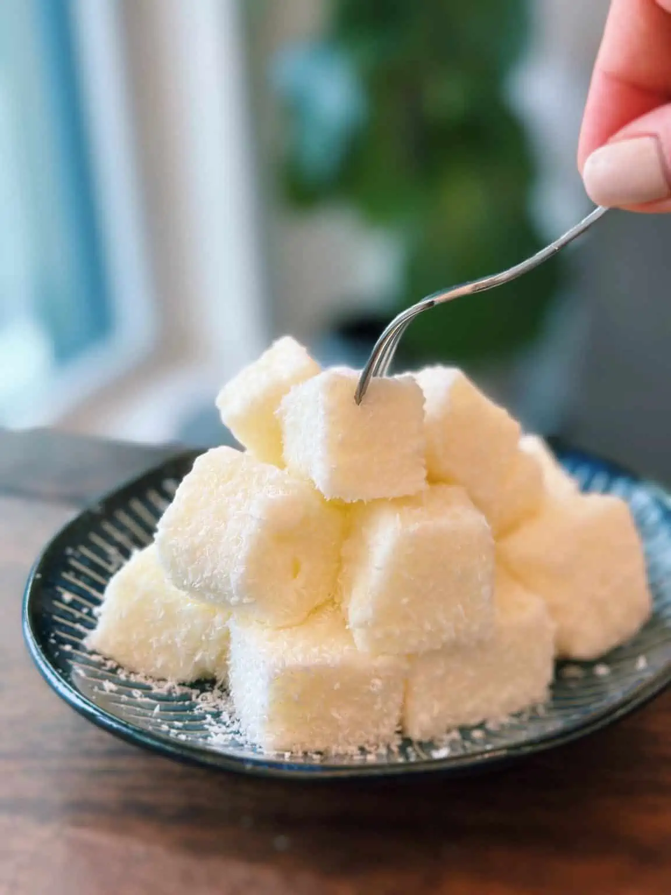

Milk Pudding with Coconut
Have you ever tried MILK PUDDING? Gluten-free and only requires FOUR simple ingredients.
Milk pudding is a fun and delicious dessert at home! Milk pudding is super rich and soft; one bite and it melts into your mouth. You can also swap for coconut milk if you want a lactose-free alternative.
Ingredients
- 500ml milk
- 50g cornstarch
- 50g sugar
- 1 cup coconut shred
Instructions
- Add half of the milk into a non-stick pot and add in sugar; mix till combined.
- In a bowl, add in the rest of the milk, and add in cornstarch, mix till fully combined.
- Bring the pot with sugar and milk to the stove, and turn the heat to medium-low. Cook on medium-low heat for 3-4 minutes or until the milk has heated. MAKE SURE IT IS NOT SIMMERING ***
- Next, mix the cornstarch mixture while slowly pouring it into the pot. Keep stirring until it becomes a thick consistency, around 4 minutes.
- Line the container with parchment paper, and pour in the mixture. Let it rest for around 1-2 hours or until fully cooled down.
- Cut into bite-size pieces and coat with shredded coconut, and enjoy!